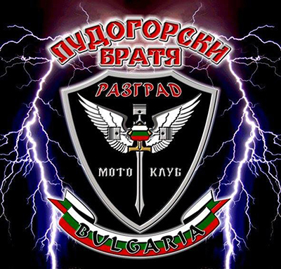

---

layout: main
title: Начало


---

<section class="main-section">
    <article class="site-news">
        <div class="news">
                
            <div class="first-section">
            <ul>
                <li><h3>Закриване мото сезон 2019</h3></li>
                <li><p>Обединено закриване на мото сезон 2019 ще правят мотористите от Нови Пазар, Шумен, Велики Преслав, Търговище и Разград</p></li>
                <li><a href="https://bmm.bike/novini/obedineno-zakrivane-na-moto-sezon-2019?fbclid=IwAR0G-M7Tx9B6Cd5GzHiBEEqpdLXXa6EuFdxuSMP5YfSBoK4FaObTSuWUVBo">Научи повече</a></li>
            </ul>
            </div>
        </div>
        <div class="news">
            <div class="second-section">
            <ul>
                <li><h3>15 Септември - Ден в памет на загиналите мотористи!</h3></li>
                <li><p>Уважаеми приятели. 15 септември е обявен за ден в памет на загиналите мотористи. МС - "Лудогорски братя" с включва в националната инициатива. От 11 и 30 всички желаещи да заповядат пред църквата в Разград - "Свети Николай Чудотворец". Всеки може да дойде с каквото желае. Мотоциклетите не са задължителни. Очакваме Ви, за да споменем всички наши братя, които не са вече между нас.</p></li>
            </ul>
        </div>
            
        </div>
        <div class="news">
        
            
            <div class="third-section">
            <ul>
                <li><h3>......</h3></li>
                <li><p>Приятели мотоциклетисти и почитатели на моторите, съжаляваме, че трябва да Ви съобщим, че и тази година Националният мото-събор гр. Разград, организиран от МК „Лудогорски братя” се проваля. Извинете ни за неудобството. Безавариен сезон на всички!</p></li>
                <li>Научи повече</li>
            </ul>
        </div>
        </div>
    </article>
</section>